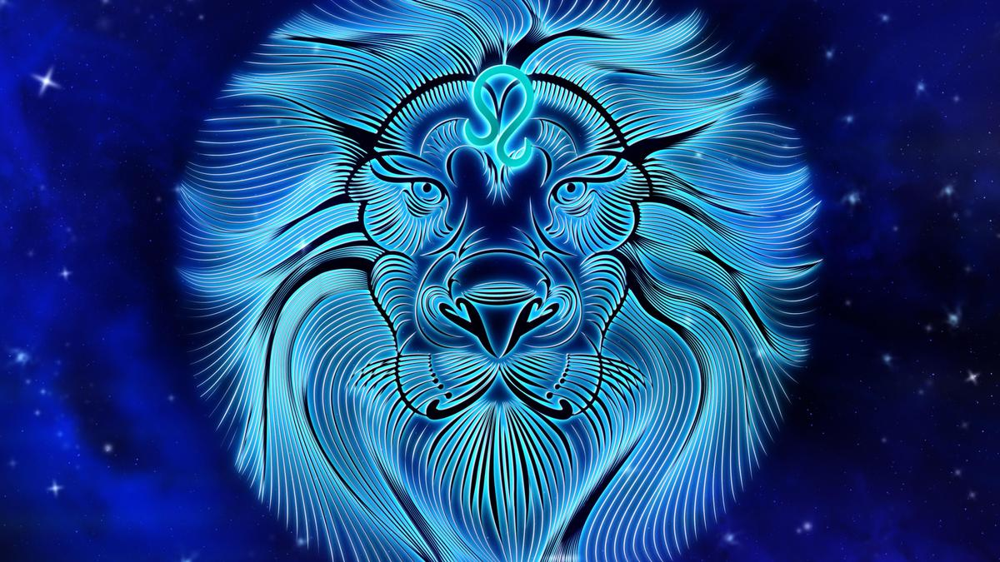

ЛЕВ
(23 липня - 21 серпня)


Довго пам'ятають образи, але, як правило, вони не прагнуть помститися, люблять бути в центрі уваги та подобатися оточенню.
Лев володіє даром творення і наполегливості у досягненні своїх цілей. Це надзвичайно творчі люди. Але при цьому Леви вкрай пихаті, горді та вперті. Люди, народжені під цим знаком, – природжені лідери.
Вони сильні та цілеспрямовані, чарівні та харизматичні, люблять бути в центрі уваги та подобатися оточенню. Разом з тим представники цього знаку часто залежать від оцінки своїх дій і досягнень.
Схвалення дає їм додаткові сили та зміцнює віру в себе. Тоді як критика може викликати навіть напади нестримного гніву.
- Особливості: Лев володіє даром творення і наполегливості у досягненні своїх цілей.
- Символізм:символ лев, пов'язаний з вогнем.
- Вплив: люди цього знака завжди дбають про деталі та прагнуть до досконалості у всьому.
- Камені-талісмани: бурштин, алмаз, смарагд, рубін, топаз і хризоліт.
Довго пам'ятають образи, але, як правило, вони не прагнуть помститися, люблять бути в центрі уваги та подобатися оточенню.